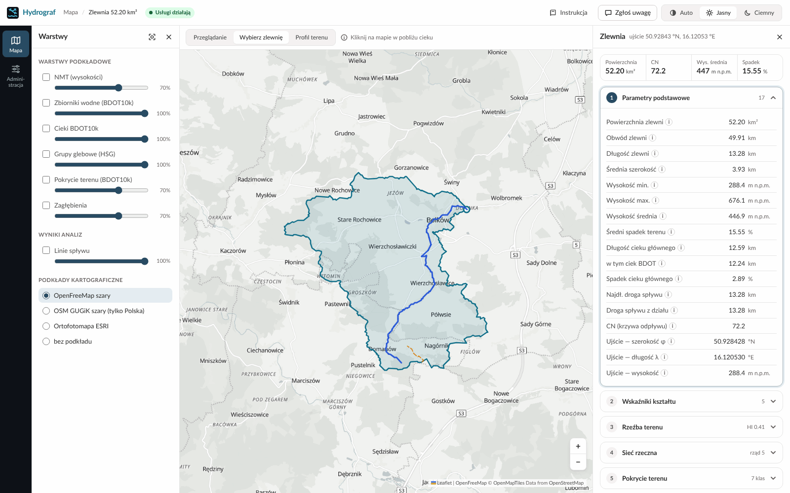
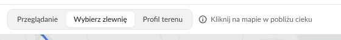
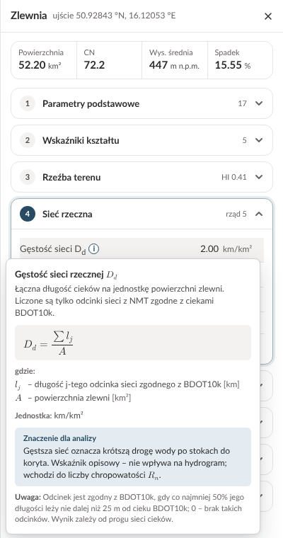
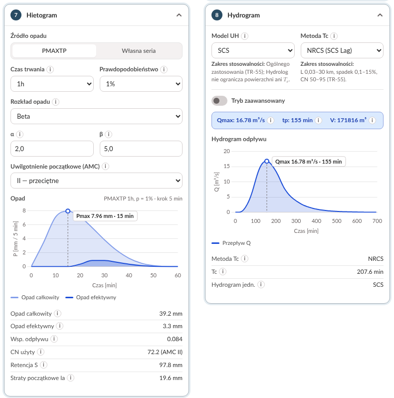
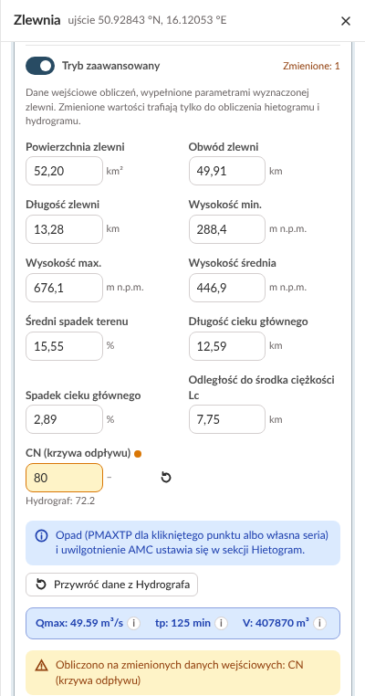
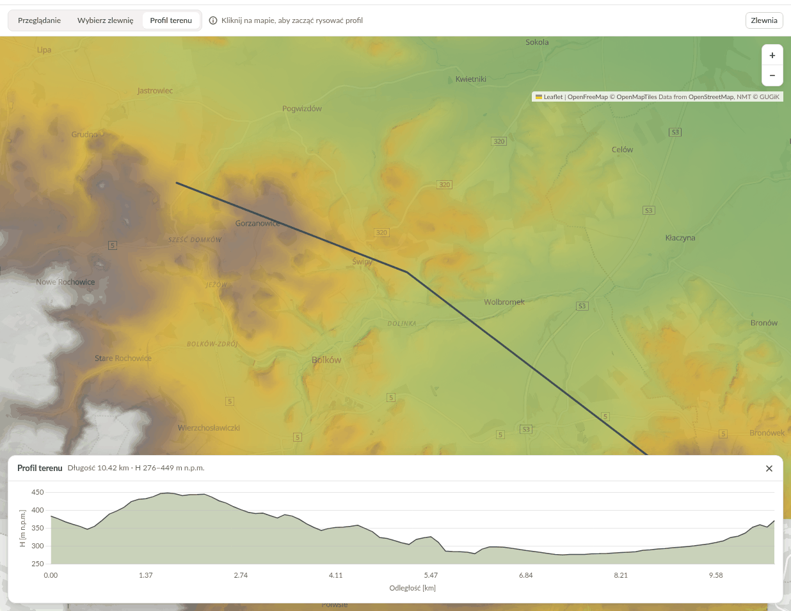
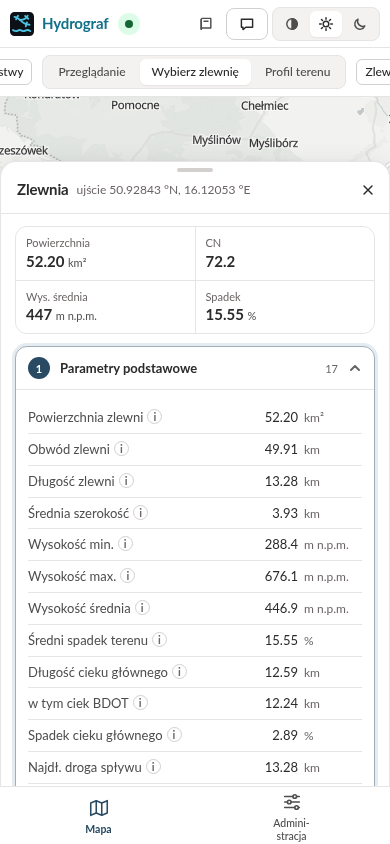
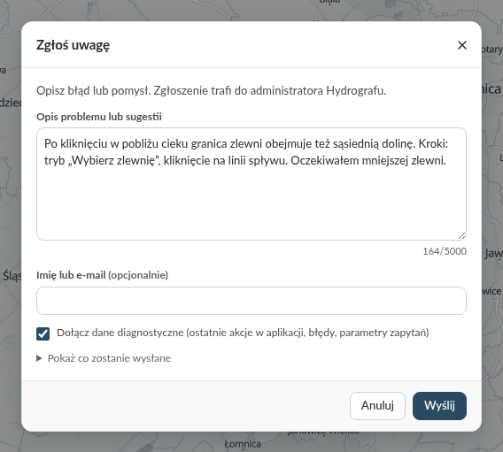

Krótki przewodnik po aplikacji

Hydrograf
Mapa, zlewnie i scenariusze odpływu — poznaj podstawy obsługi i powiedz nam, co warto poprawić.
Wyniki, wygląd oraz funkcje mogą się zmieniać. Liczymy na wasze uwagi, żeby dostosować projekt do potrzeb użytkowników!
01 · Orientacja
Co jest na ekranie?

„Instrukcja” — ten przewodnik, „Zgłoś uwagę” — formularz uwag, Auto · Jasny · Ciemny — motyw.
Po lewej szyna Mapa · Administracja i panel „Warstwy”: krycie, podkłady, przybliżenie do zasięgu włączonych warstw. Po prawej „Zlewnia” z wynikiem.
Tryby pracy: Przeglądanie · Wybierz zlewnię · Profil terenu, a obok podpowiedź.
Przeciągnij krawędź panelu, aby zmienić jego szerokość (dwuklik przywraca domyślną). × zwija panel, w „Zlewni” czyści też wynik; przyciski „Warstwy” i „Zlewnia” nad mapą otwierają panele ponownie.
02 · Pierwsza analiza
Wyznacz zlewnię w trzech krokach

Przybliż mapę. W panelu „Warstwy” możesz włączyć „Linie spływu”, żeby zobaczyć, którędy spływa woda.
Na pasku nad mapą wybierz „Wybierz zlewnię”, a potem kliknij mapę w pobliżu linii spływu.
Granica zlewni pojawi się na mapie, a panel „Zlewnia” otworzy się po prawej stronie.
Brak wyniku? Sprawdź, czy punkt leży na obszarze dostępnych danych, i kliknij bliżej linii spływu.
03 · Wynik analizy
Jak czytać panel „Zlewnia”?

Zlewnia to obszar, z którego woda spływa do jednego miejsca — ujścia. U góry panelu: powierzchnia, CN, średnia wysokość i spadek terenu.
Numerowane sekcje rozwiniesz kliknięciem: parametry podstawowe, kształt, rzeźba terenu, sieć rzeczna, pokrycie terenu, gleby, hietogram i hydrogram.
Najedź kursorem na (i) obok nazwy, a zobaczysz, co oznacza parametr i skąd pochodzi. Na telefonie dotknij (i); ponowne dotknięcie lub Esc je zamyka.
04 · Opad i odpływ
Hietogram i hydrogram

Hietogram to opad w czasie. Wybierz czas trwania, prawdopodobieństwo i rozkład opadu; wysokość opadu pochodzi z danych PMAXTP.
Hydrogram to przepływ w ujściu w czasie: Qmax, czas do szczytu tp i objętość V. Wybierz model (SCS, Nash, Snyder) i metodę czasu koncentracji.
Pod wybranym modelem i metodą widać, dla jakich zlewni je opracowano. Pełny opis jest w (i). Poza zakresem traktuj wynik ostrożnie.
Hietogram i hydrogram są liczone dla zlewni o powierzchni do 250 km²; dla większych te sekcje się nie pojawiają.
05 · Tryb zaawansowany
Własne dane wejściowe hydrogramu

W sekcji „Hydrogram” włącz „Tryb zaawansowany”. Pola są wypełnione parametrami wyznaczonej zlewni.
Wpisz własną wartość — hydrogram przeliczy się po chwili. Zmienione pole jest wyróżnione, pod nim widać wartość Hydrografa, a nad wykresem listę zmian.
Strzałka obok pola cofa jedną zmianę, a „Przywróć dane z Hydrografa” — wszystkie. Zmiany nie dotyczą „Parametrów podstawowych”.
Opad projektowy pochodzi z PMAXTP dla klikniętego punktu i nie można go tu zmienić.
06 · Profil terenu
Przekrój terenu wzdłuż linii

Tryb wybierzesz na pasku nad mapą. Warstwa NMT pokazuje wysokości kolorami.
Każde kliknięcie dodaje punkt. Backspace cofa ostatni, Esc anuluje rysowanie.
Wykres wysokości otworzy się w szufladzie u dołu mapy. Najedź na wykres, aby zobaczyć miejsce na linii.
07 · Telefon i motyw
Na telefonie i po zmroku

Nawigacja przechodzi na dolny pasek, a panele „Warstwy” i „Zlewnia” wysuwają się od dołu. Otworzysz je przyciskami na pasku nad mapą.
Pasek trybów przewiniesz palcem w bok. Objaśnienie parametru pokaże dotknięcie (i).
Przełącznik na górnym pasku: Auto (jak w systemie), Jasny lub Ciemny. Wybór zostaje zapamiętany w przeglądarce.
08 · Pomóż nam ulepszać aplikację
Jak przekazać feedback?
Przycisk jest na górnym pasku aplikacji; na telefonie to ikona dymka.
Podaj miejsce na mapie, wykonane kroki, oczekiwany wynik i to, co się wydarzyło.
Kontakt jest opcjonalny. „Pokaż co zostanie wysłane” pokazuje diagnostykę; możesz odznaczyć jej dołączenie.
